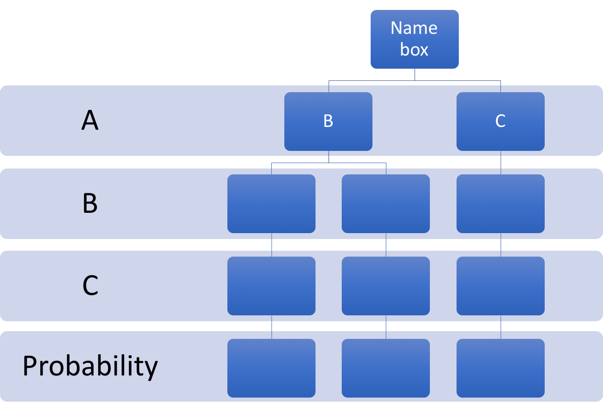

<!DOCTYPE html> <!--
<html>
    <head>
        <title>Michael Shin</title>
        <meta charset="utf-8"/>
        <link rel="stylesheet" href="https://maxcdn.bootstrapcdn.com/bootstrap/3.3.7/css/bootstrap.min.css"/>
        <link rel="stylesheet" type="text/css" href="secretsanta/secretsanta.css">
        <link rel="shortcut icon" href="favicon.ico">
        <script src="https://ajax.googleapis.com/ajax/libs/jquery/1.12.4/jquery.min.js"></script>
        <script src="https://netdna.bootstrapcdn.com/bootstrap/3.0.3/js/bootstrap.min.js"></script>
    </head>
    <body>
        <header class="container">
            <div class="col-sm-4 col-sm-offset-2"><a href='http://www.michaelhshin.com'></a></div>
            <nav class="col-sm-4">
                <p><a class="btn btn-default" href="http://www.michaelhshin.com/bio">About Me</a></p>
                <div class="btn-group">
                    <button class="btn btn-default dropdown-toggle" type="button" data-toggle="dropdown">Articles
                        <span class="caret"></span>
                    </button>
                    <ul class="dropdown-menu" role="menu">
                        <li><a href="http://www.michaelhshin.com/vitamina">Dr. Alfred Sommer and Vitamin A</a></li>
                        <li><a href="http://www.michaelhshin.com/secretsanta">Mathematical Problem with Secret Santa</a></li>
                    </ul>
                </div>
                <p><a class="btn btn-default" href="mailto:shin.michael930@gmail.com?Subject=Reaching%20Out">Contact</a></p>
            </nav>
        </header>
        <hr>
        <div class='container'>
            <div><h2 style='text-align: center'>A Mathematical Problem with Secret Santa</h2></div>
            <br>
            
            <a href='http://secretsantaquestions.yolasite.com/resources/Secret%20Santa.gif'><h6 class='text-center'>Click for Source</h6></a>
            <br>
        </div>
        <div class='col-sm-8 col-sm-offset-2'>
            <p>It is that time of the year when people in offices across America come together to draw names from a bucket for the annual Secret Santa.
            Everyone stands around a pile of names and picks out a name. If you draw your own name, you put the name slip back in the pile and draw again.
            There is, of course, the expectation that the drawing be completely random and anonymous.</p><br>
            <p>But is it really?</p><br>
            <p>This clearly presents a mathematical concept termed <i>derangement</i> which describes a permutation of the elements (person) of a set (office employees) such that no element (person) draws his own name.</p><br>
            <p>In a simple scenario involving three people, A, B, and C, we can see that there will be 6 possible permutations (3!) for name drawing. Of those 6 possible drawing combinations,
            just two drawing scenarios exist in which someone does not draw his own name (also termed a derangement).</p><br>
            <h4 style='text-align: center'>ABC &nbsp; &nbsp; &nbsp; BAC &nbsp; &nbsp; &nbsp; <strong>CAB</strong></h4><br>
            <h4 style='text-align: center'>ACB &nbsp; &nbsp; &nbsp; <strong>BCA</strong> &nbsp; &nbsp; &nbsp; CBA</h4><br>
            <p>Keeping these two successful derangements in mind, let&rsquo;s work through the probabilities of choosing someone&rsquo;s name.</p><br>
            <p>Let&rsquo;s assume you are person A. You can either choose B or C, but not A. Therefore, the chance of choosing either B or C is 50%.</p><br>
            <span class='text'></span><br>
            <p>Let&rsquo;s suppose you chose B. When B draws, he must choose A or C. Therefore, the chance of choosing either A or C is 50%. However, if he chooses A, then C must choose himself, which is not allowed.
            This is the disallowed combination <i>BAC</i>. Multiplying the probabilities gives a failure rate of 25%.</p><br>
            <span class='text'></span><br>
            <p>Now, let&rsquo;s suppose B chooses C. When C draws, he must choose A. Therefore, the chance of C choosing A is 100%.
            This is the derangement <b>BCA</b>. Multiplying the probabilities gives a <b>BCA</b> derangement probability of 25%.</p><br>
            <span class='text'></span><br>
            <p>Let&rsquo;s suppose you chose C. When B draws, he must choose A since he must return his slip if he draws himself. Therefore, the chance of B choosing A is 100%. This also means that C must choose B, since A was drawn by B.
            Therefore, the chance of C choosing B is 100%. This is the derangement <b>CAB</b>. Multiplying the probabilities gives a <b>CAB</b> derangement probability of 50%.</p><br>
            <span class='text'></span><br>
            <p>In this three-person Secret Santa, person A is twice as likely to buy for C than for B, and person B is twice as likely to buy for A than for C.</p><br>
            <p>In addition to not being random, a three-person Secret Santa is not anonymous since anyone can look at his drawing and know which of the two derangements is correct.
            However, for a four-person Secret Santa and above, nobody will know, for certain, the correct derangement. Yet the probabilities will still not be uniform.</p><br>
            <p>A probability tree for a four-person Secret Santa is shown below.</p><br>
            <span class='text'></span><br>
            <p>In a four-person scenario, there are 24 (4!) combinations, with nine derangements:</p><br>
            <h4 style='text-align: center'>ABCD &nbsp; &nbsp; &nbsp; BACD &nbsp; &nbsp; &nbsp; CABD &nbsp; &nbsp; &nbsp; <b>DABC</b></h4><br>
            <h4 style='text-align: center'>ACDC &nbsp; &nbsp; &nbsp; <b>BADC</b> &nbsp; &nbsp; &nbsp; <b>CADB</b> &nbsp; &nbsp; &nbsp; DACB</h4><br>
            <h4 style='text-align: center'>ACBD &nbsp; &nbsp; &nbsp; BCAD &nbsp; &nbsp; &nbsp; CBAD &nbsp; &nbsp; &nbsp; DBAC</h4><br>
            <h4 style='text-align: center'>ACDB &nbsp; &nbsp; &nbsp; <b>BCDA</b> &nbsp; &nbsp; &nbsp; CBDA &nbsp; &nbsp; &nbsp; DBCA</h4><br>
            <h4 style='text-align: center'>ADCB &nbsp; &nbsp; &nbsp; BDCA &nbsp; &nbsp; &nbsp; <b>CDBA</b> &nbsp; &nbsp; &nbsp; <b>DCBA</b></h4><br>
            <h4 style='text-align: center'>ADBC &nbsp; &nbsp; &nbsp; <b>BDAC</b> &nbsp; &nbsp; &nbsp; <b>CDAB</b> &nbsp; &nbsp; &nbsp; <b>DCAB</b></h4><br>
            <p>The nine derangements and their probabilities are:</p><br>
            <h4>BADC: 1/9</h4>
            <h4>BCDA: 1/18</h4>
            <h4>BDAC: 1/9</h4>
            <h4>CADB: 1/12</h4>
            <h4>CDAB: 1/12</h4>
            <h4>CDBA: 1/12</h4>
            <h4>DABC: 1/6</h4>
            <h4>DCAB: 1/12</h4>
            <h4>DCBA: 1/12</h4><br>
            <p>In two instances, D will draw himself. These two failed permutations and their probabilities are:</p><br>
            <h4>BCAD: 1/18</h4>
            <h4>CABD: 1/12</h4><br>
            <p>In this four-person Secret Santa scenario:</p><br>
            <p>A has a 33% chance of drawing B, 33% chance of drawing C, and 33% chance of drawing D.</p>
            <p>B has a 44% chance of drawing A, 28% chance of drawing C, and 28% chance of drawing D.</p>
            <p>C has a 33% chance of drawing A, 42% chance of drawing B, and 25% chance of drawing D.</p>
            <p>D has a 22% chance of drawing A, 25% chance of drawing B, 39% chance of drawing C, and 14% chance of drawing himself.</p><br>
            <p>Of course, the examples above only work with a Secret Santa arrangement in which someone who draws his own name returns his name into the pile and draws another name.</p>
            <p>Thus, to solve this problem, everyone should choose a name from the pile and if anyone has his own name, then everyone should redraw names.</p><br>
            <p>Happy holidays!</p><br><br><br>
        </div>
        
        <footer class="container">
            <div class="row">
                <p class="col-sm-4 col-sm-offset-4 text-center">Michael Shin 2017</p>
            </div>
        </footer>
    </body>
</html> >
